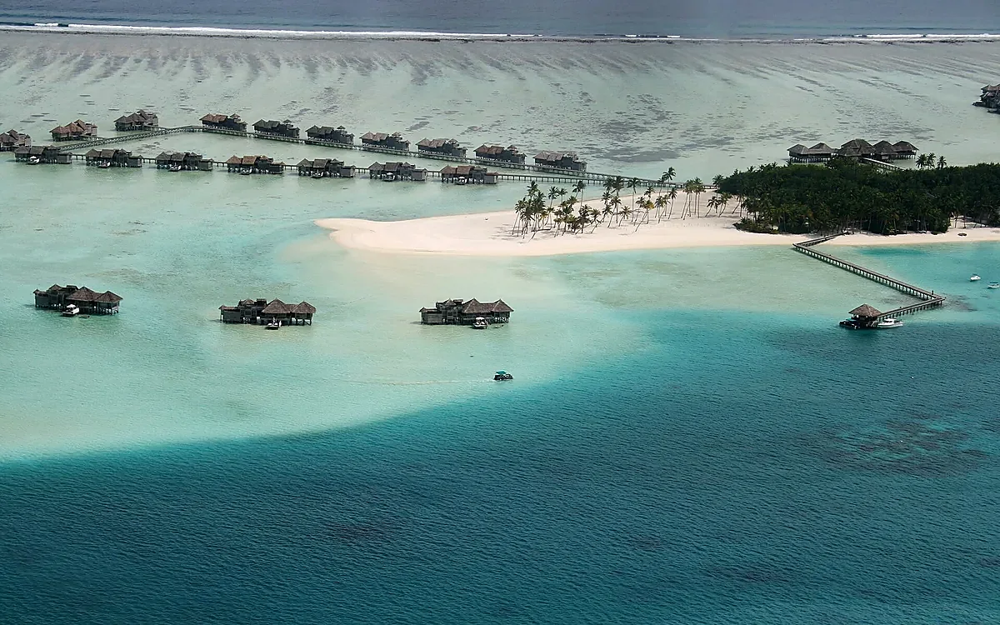
Каждый курорт — отдельный остров
Практически каждый отель расположен на собственном острове со своей атмосферой, пляжами и инфраструктурой.
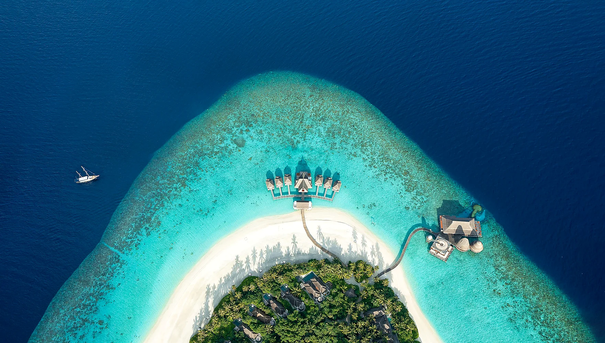
МАЛЬДИВЫ
На Мальдивах каждый курорт — это отдельный остров со своим характером, рифом, пляжем и атмосферой. Мы поможем выбрать вариант, который действительно подойдёт именно вашему формату отдыха.
Индивидуальный подбор курорта и виллы
Особенности направления
Мальдивы — это не просто отдых на островах. Здесь каждый курорт занимает собственный остров, а путешествие строится вокруг приватности, природы и высокого уровня сервиса.

Практически каждый отель расположен на собственном острове со своей атмосферой, пляжами и инфраструктурой.
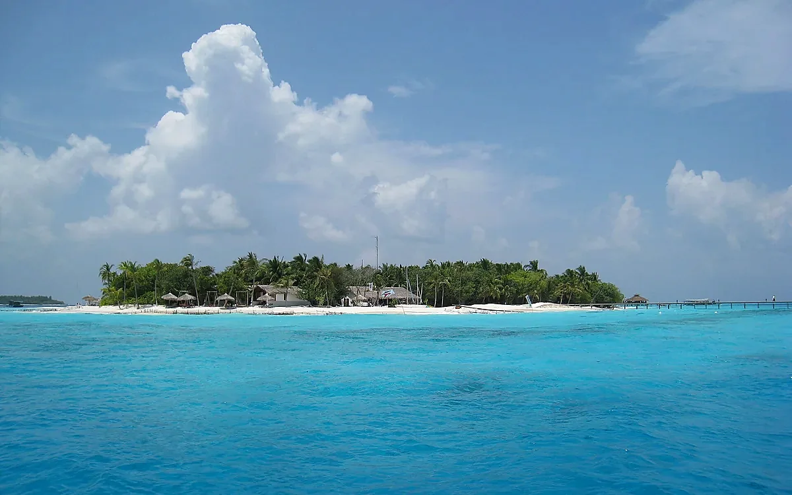
Спокойная прозрачная вода, белоснежный песок и знаменитые виды, которыми известны Мальдивы во всём мире.
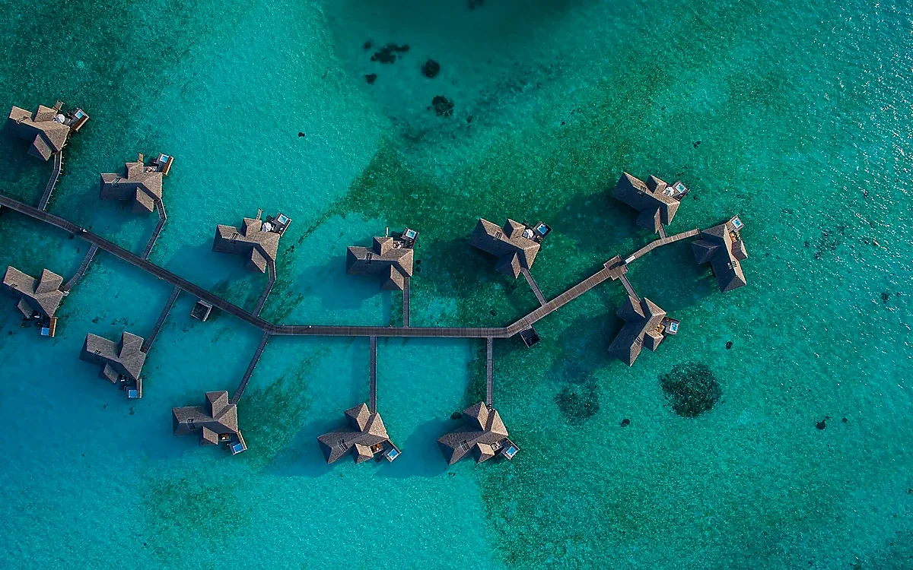
Один из главных символов Мальдив — просторные виллы с прямым выходом в океан и максимальной приватностью.
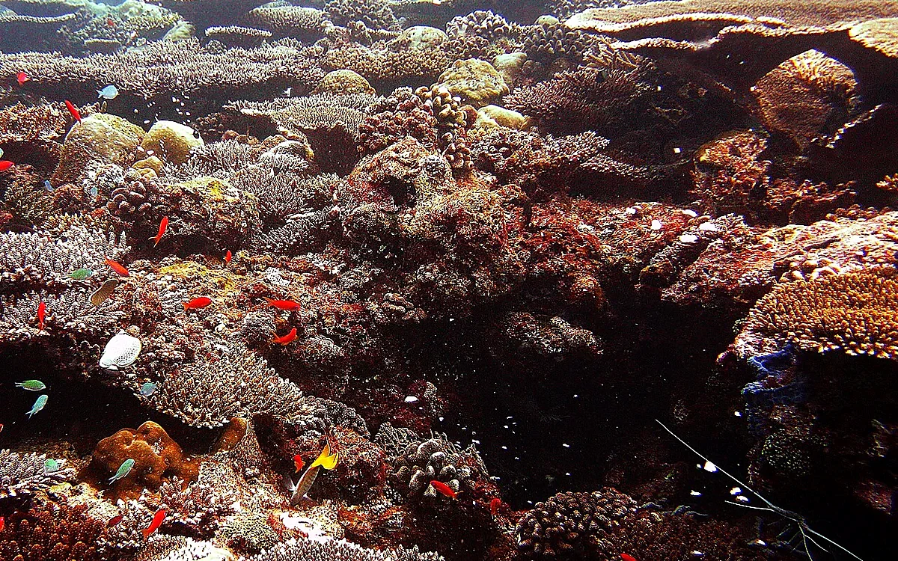
Во многих отелях можно наблюдать яркий подводный мир буквально в нескольких метрах от собственного пляжа.
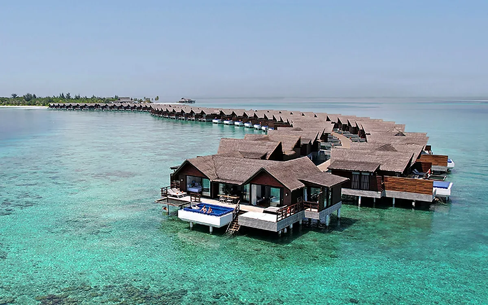
Большинство курортов предлагают персональный сервис, рестораны высокого уровня, SPA-комплексы и индивидуальный подход к каждому гостю.
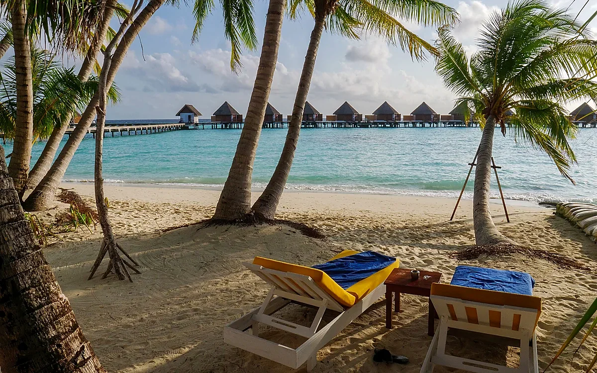
Мальдивы выбирают за тишину, приватность и возможность полностью отключиться от городского ритма.
Атоллы Мальдив
Мальдивы — это не один остров, а более тысячи островов, объединенных в десятки атоллов. Каждый из них отличается атмосферой, уровнем курортов, временем трансфера, домашними рифами и возможностями для отдыха. Чтобы вам было проще выбрать идеальное место, мы собрали самые популярные атоллы и кратко рассказали об их особенностях.
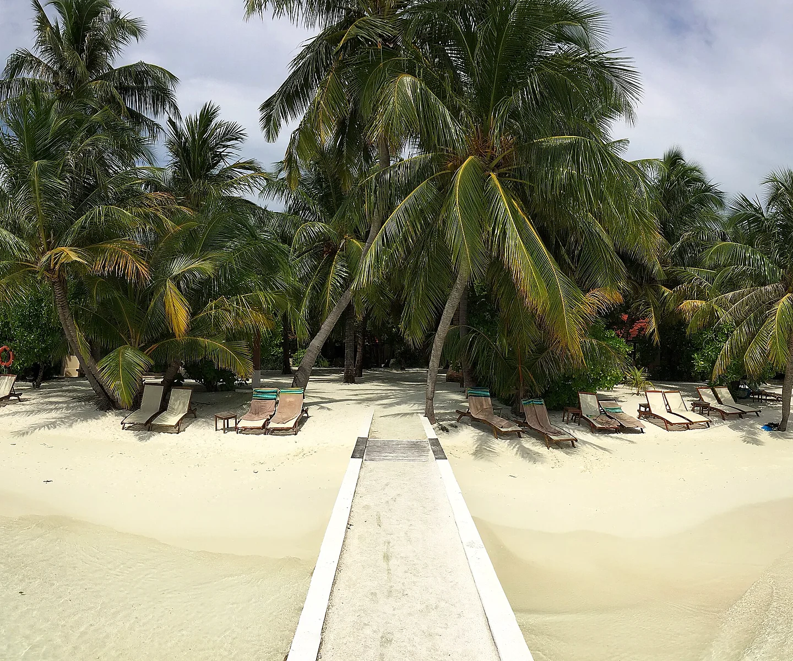
Самый известный и востребованный атолл Мальдив, который отлично подходит для первого знакомства с островами. Благодаря близости к международному аэропорту Велана большинство курортов находятся всего в 15–30 минутах на скоростном катере, поэтому путешествие начинается практически сразу после прилета. Здесь представлен один из самых больших выборов отелей: от уютных семейных резортов до роскошных пятизвездочных комплексов с водными виллами и высоким уровнем сервиса. Лагуны с бирюзовой водой, красивые домашние рифы и развитая инфраструктура делают этот регион универсальным выбором для семей, пар и молодоженов. Если вы хотите увидеть классические Мальдивы без длительных внутренних перелетов, Северный Мале станет одним из лучших вариантов.
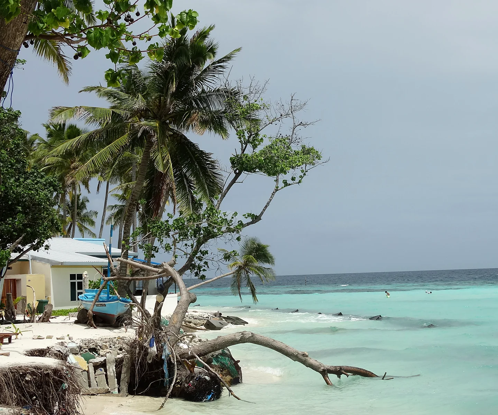
Южный Мале часто выбирают путешественники, которые хотят сохранить удобство короткого трансфера, но при этом получить более спокойную и приватную атмосферу. Курорты расположены дальше друг от друга, благодаря чему отдых здесь ощущается более уединенным. Атолл славится прозрачными лагунами, белоснежными пляжами и красивыми коралловыми рифами, расположенными совсем рядом с берегом. Многие отели ориентированы на романтический отдых, медовый месяц и спокойный семейный отпуск. Здесь проще почувствовать настоящую атмосферу тропического острова, наслаждаясь высоким уровнем сервиса, красивыми закатами и размеренным ритмом жизни, ради которого миллионы туристов выбирают Мальдивы.
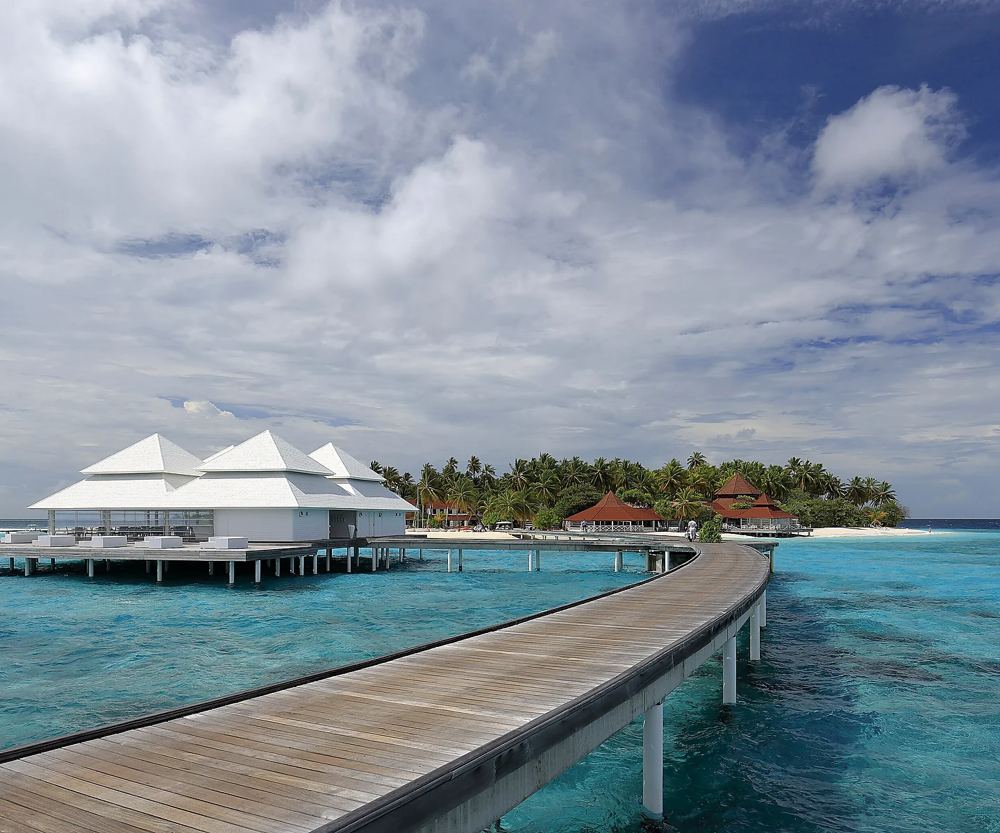
Атолл Ари считается одним из лучших мест на Мальдивах для любителей подводного мира. Именно сюда приезжают ради дайвинга и снорклинга, ведь местные рифы отличаются невероятным разнообразием морской жизни. Здесь можно встретить китовых акул, мант, морских черепах и сотни видов тропических рыб. Помимо природы, атолл известен большим количеством качественных курортов разных категорий — от уютных бутик-отелей до роскошных резортов мировых брендов. Просторные лагуны, великолепные пляжи и высокий уровень сервиса делают Ари отличным выбором как для активного отдыха, так и для спокойного отпуска в окружении океана.
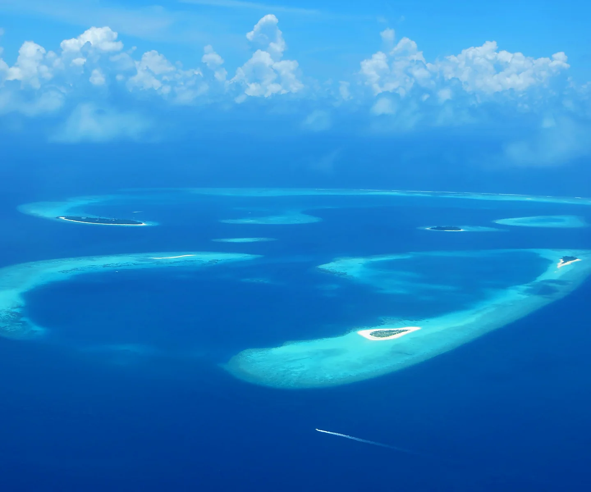
Баа — один из самых уникальных атоллов страны, признанный биосферным заповедником ЮНЕСКО благодаря богатству морской экосистемы. Именно здесь находится знаменитая бухта Ханифару, куда в определенный сезон приплывают десятки мант и китовые акулы. Курорты Баа гармонично вписаны в окружающую природу и делают акцент на экологичном отдыхе, сохраняя при этом высокий уровень комфорта. Атолл выбирают путешественники, которые ценят тишину, красивую природу и возможность увидеть настоящий подводный мир Индийского океана. Это одно из лучших мест для тех, кто мечтает совместить роскошный отдых с уникальными впечатлениями.
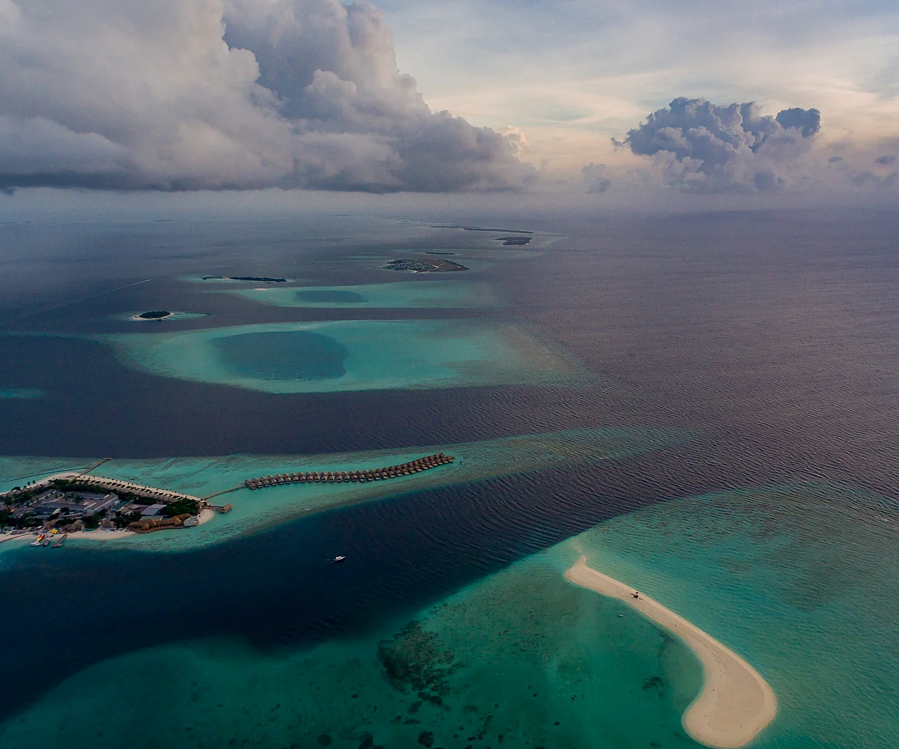
Лавиани привлекает путешественников широкими лагунами, длинными белоснежными пляжами и спокойной атмосферой. Здесь расположено множество современных курортов с просторными виллами, красивыми домашними рифами и отличными условиями для снорклинга. Атолл отлично подходит как для романтических поездок, так и для семейного отдыха благодаря сочетанию качественного сервиса, живописной природы и комфортной инфраструктуры. Здесь легко почувствовать настоящий островной ритм жизни, наслаждаясь кристально чистой водой, красивыми закатами и неспешным отдыхом вдали от городской суеты.
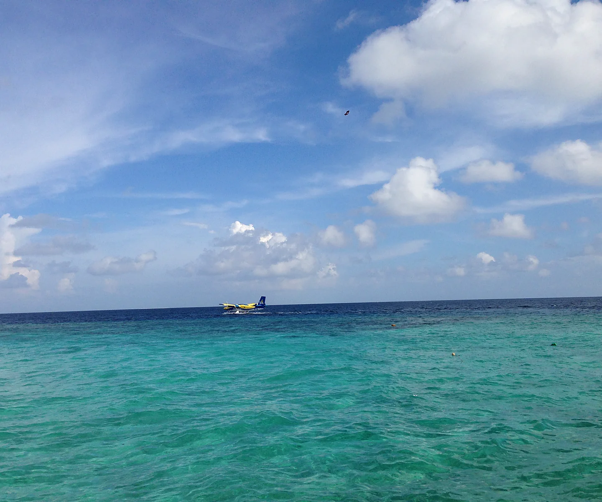
Раа считается одним из наиболее перспективных атоллов Мальдив, где расположены современные курорты высокого уровня и просторные острова с великолепными пляжами. Благодаря меньшему количеству туристов атмосфера здесь остается спокойной и приватной даже в высокий сезон. Многие известные мировые гостиничные бренды открыли свои резорты именно здесь, предлагая просторные виллы, высокий уровень сервиса и широкие возможности для отдыха. Раа идеально подойдет тем, кто хочет насладиться тишиной, красивыми лагунами и безупречным комфортом вдали от более популярных туристических регионов.
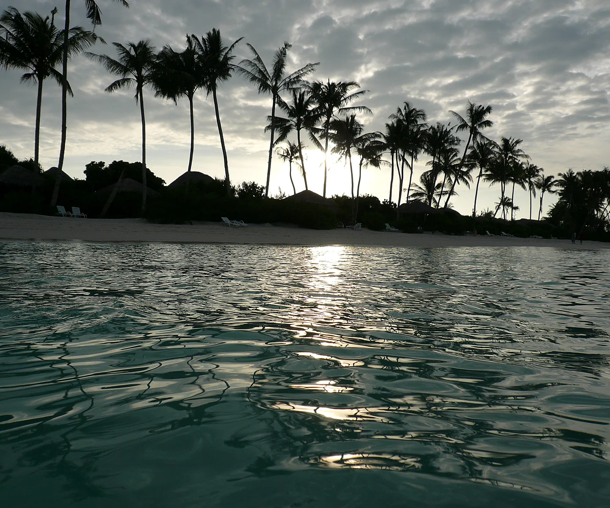
Нону — молодой и быстро развивающийся атолл, который уже успел стать домом для нескольких известных международных luxury-брендов. Здесь путешественников ждут просторные водные виллы, современные дизайнерские курорты, великолепные лагуны и высокий уровень персонального сервиса. Благодаря удаленности от самых популярных маршрутов отдых здесь проходит спокойно и размеренно, позволяя полностью расслабиться и насладиться атмосферой тропического рая. Это отличный выбор для тех, кто ценит современную роскошь, приватность и высокий уровень комфорта во всех деталях.
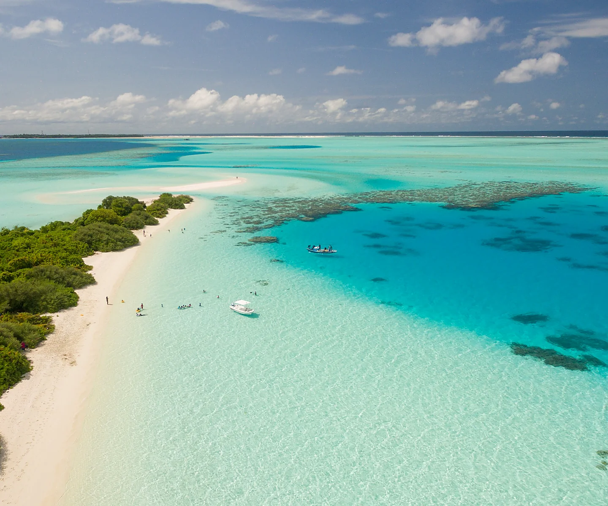
Дхаалу объединяет красивую природу, высокий уровень курортов и спокойную атмосферу, за которую его особенно любят постоянные гости Мальдив. Просторные пляжи, прозрачная вода, яркие коралловые рифы и богатый подводный мир создают идеальные условия для снорклинга, дайвинга и неспешного отдыха у океана. Курорты атолла предлагают высокий уровень сервиса, просторные виллы и большое внимание к приватности гостей. Дхаалу отлично подойдет семьям, парам и молодоженам, которые хотят провести отпуск в окружении первозданной природы, наслаждаясь комфортом и настоящим мальдивским спокойствием.
Сезонность
На Мальдивы можно отправляться в любое время года — температура воздуха здесь держится около +28…+31°C, а вода в океане остается теплой практически круглый год. Однако климат делится на два основных сезона, каждый из которых имеет свои особенности.
С ноября по апрель продолжается сухой сезон. В этот период преобладает солнечная погода, море обычно спокойнее, влажность ниже, а вероятность осадков минимальна. Именно это время считается лучшим для пляжного отдыха, медового месяца, снорклинга, дайвинга и первой поездки на Мальдивы.
С мая по октябрь начинается сезон юго-западного муссона. Возможны кратковременные тропические ливни, усиливается ветер и появляются небольшие волны, однако дожди редко идут целый день. В это время острова становятся менее загруженными туристами, а многие курорты предлагают более привлекательные цены и специальные предложения.
Важно учитывать, что условия могут немного отличаться в зависимости от атолла. Если ваша главная цель — идеальная лагуна, лучший домашний риф, дайвинг или максимальное уединение, наши специалисты помогут подобрать остров, который лучше всего подойдет именно под ваши пожелания.
Впечатления
Мальдивы — это гораздо больше, чем белоснежные пляжи и бирюзовый океан. Каждый день здесь приносит новые эмоции: встречи с морскими обитателями, романтические закаты, ужины под звездами и ощущение полного спокойствия, которого так не хватает в повседневной жизни.
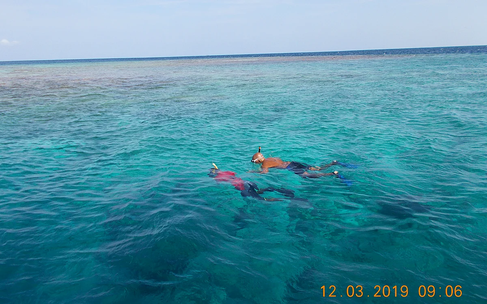
Во многих курортах коралловый риф находится всего в нескольких метрах от берега. Уже через несколько минут после входа в воду можно увидеть ярких тропических рыб, морских черепах, скатов и удивительный подводный мир Индийского океана.
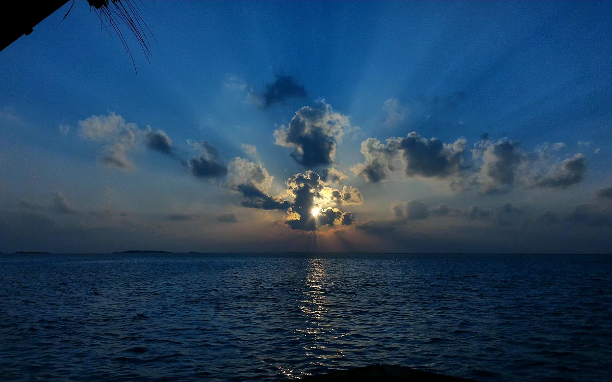
Каждый вечер небо окрашивается в золотые, розовые и оранжевые оттенки, превращая закат в настоящее представление природы. Особенно красиво наблюдать его во время прогулки на яхте или прямо с террасы собственной водной виллы.
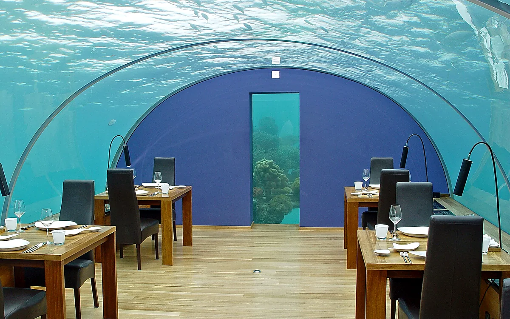
Романтический ужин в ресторане над лагуной становится одним из самых запоминающихся моментов отдыха. Свежие морепродукты, шум океана, мягкий свет фонарей и звездное небо создают атмосферу, которую невозможно повторить где-либо еще.
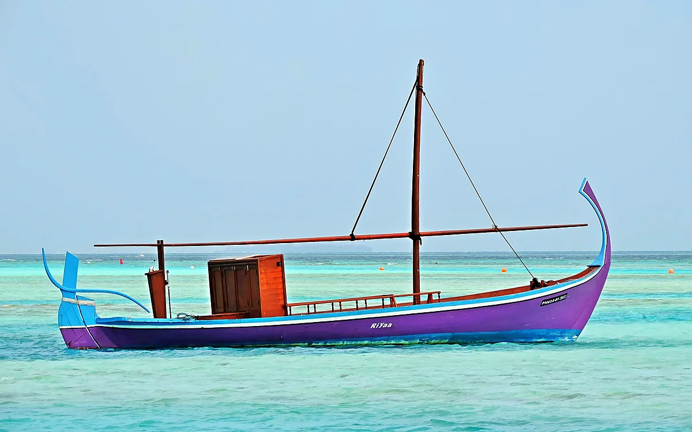
Отправьтесь в круиз между островами, встретьте дельфинов в открытом океане, попробуйте рыбалку на закате или просто насладитесь бескрайними мальдивскими пейзажами, которые особенно красивы с воды.
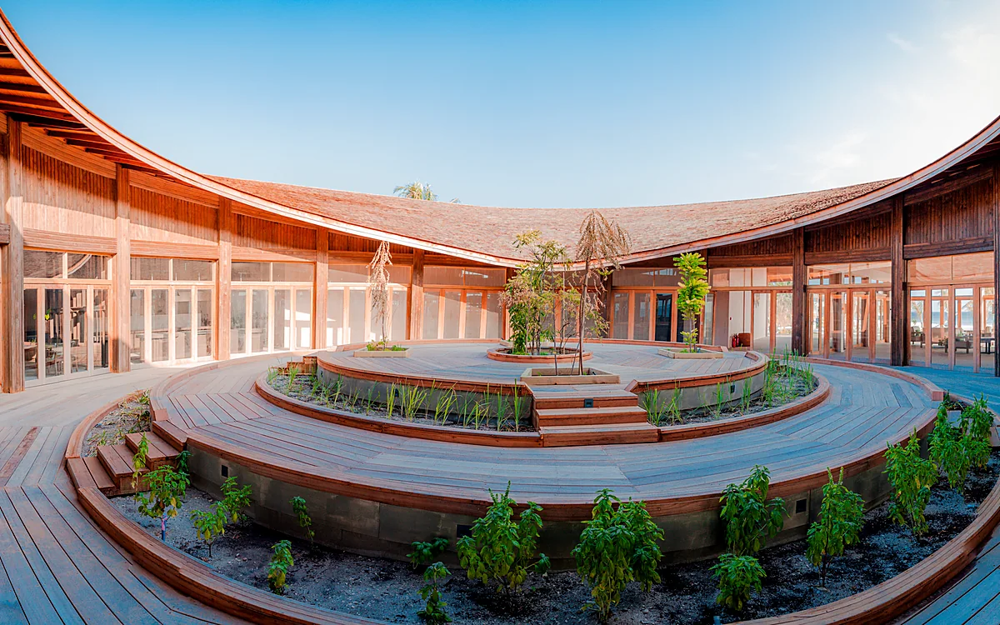
Лучшие спа-комплексы Мальдив расположены прямо над океаном или среди пальмовых садов. Расслабляющие процедуры, массажи и природная тишина помогают полностью восстановить силы и забыть о городской суете.
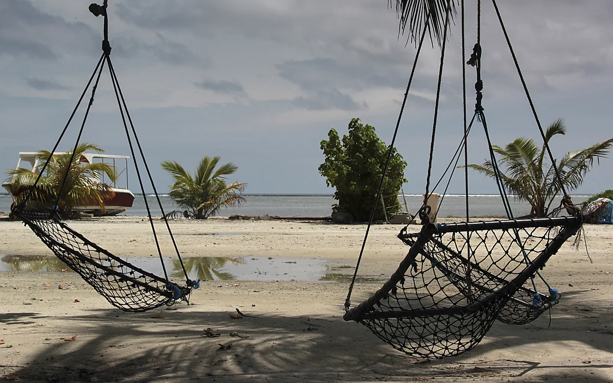
Главная роскошь Мальдив — возможность никуда не спешить. Проснуться под шум волн, провести день на собственном пляже, искупаться в теплой лагуне и встретить закат без расписаний, пробок и постоянных уведомлений.
Выбор отеля
На Мальдивах впечатления от отдыха зависят не только от уровня отеля, но и от особенностей самого острова. Перед бронированием стоит обратить внимание на несколько важных факторов, которые помогут выбрать курорт, идеально подходящий именно вам.
До большинства курортов гости добираются на скоростном катере, гидросамолете или внутреннем рейсе с последующим трансфером на лодке. Время в пути может составлять от 15 минут до нескольких часов, поэтому этот фактор влияет не только на комфорт поездки, но и на общую стоимость отдыха.
Пляжные виллы отлично подходят семьям с детьми благодаря удобному выходу к берегу и большему пространству на суше. Водные виллы создают совершенно другую атмосферу — максимум приватности, панорамные виды на океан и прямой спуск в лагуну прямо с собственной террасы.
Если вы планируете заниматься снорклингом, обязательно уточняйте наличие домашнего рифа. На одних островах кораллы находятся всего в нескольких метрах от пляжа, а на других для знакомства с подводным миром потребуется лодочная экскурсия.
Компактные острова идеально подходят для спокойного отдыха и полного уединения. Более крупные курорты предлагают широкий выбор ресторанов, баров, развлечений, спортивных активностей и прогулочных зон, поэтому каждый формат отдыха имеет свои преимущества.
На Мальдивах доступны различные концепции — от завтраков до Premium All Inclusive. На удаленных островах выбор ресторанов за пределами курорта отсутствует, поэтому правильно подобранный тип питания сделает отдых значительно комфортнее и поможет избежать лишних расходов.
Одни курорты создаются для романтических путешествий и полного спокойствия, другие ориентированы на семейный отдых с детьми, активные развлечения и насыщенную программу. Правильно выбранная концепция курорта во многом определяет впечатления от всей поездки.
ПОИСК ТУРА
Выберите страну, даты путешествия, количество туристов и другие параметры. Система подберёт подходящие варианты отдыха, которые можно сразу изучить и сравнить.